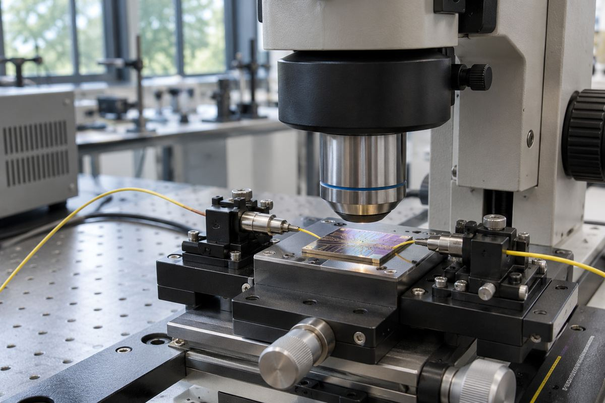

电子设备 / EXPLAINED
是德ADS支持高塔PH18，在同一环境验证电路与光路
11月9日宣布工艺设计套件支持认证，最终制造验证与流片仍使用高塔工具。

测试与设计软件厂商是德科技11月9日宣布，ADS Photonic Designer已通过对高塔半导体PH18硅光子工艺设计套件的支持认证。使用ADS的高频设计人员可以在同一环境设计PH18光子集成电路，并与电子电路联合仿真。公告确认的是工具支持，没有另列零售日期或新芯片出货时间。
高塔为客户制造其设计的半导体。PH18是其在芯片上制造光器件的硅光子工艺，光子集成电路可传导、调制或探测光。信号从电变成光再变回电时，电子和光学部分都会影响结果，例如电驱动波形会影响光调制器。
PDK是工艺设计套件，向工具提供可制造结构、设计规则和器件模型。是德称PH18物理模型可用于电—光—电的联合仿真。从原理图到版图在同一工具内完成，有望减少模型转换与数据搬运。高塔的射频工艺使用ADS已超过十年，此次加入的是PH18光路设计。
工具提供符合设计规则的版图器件及设计者级的版图与原理图检查，用来比较实际连接与原理图。最终代工验证与流片使用高塔工具。流片是将设计数据交给制造环节，与早期检查通过是不同阶段。
公告中的1600G及以上是高速光链路的开发背景，不是随此次支持发布的某款芯片实测速度。编辑部认为，电路和光路一起仿真有助于在制造前定位问题。设计迭代次数和生产成本能降低多少，仍要用应用案例和测量条件比较。
实际设计要分别核对版图规则和系统性能。调整光路长度或电气连接可能改变仿真结果，而结构能否布置取决于工艺规则。温度与工艺波动假设也会影响解读。联合工作流提供工具，测试哪些条件仍由设计团队决定。
导入取决于ADS版本、许可证和PDK访问权限。公告未公布价格或各客户的访问条款。设计团队需核对项目所需的支持，以及向高塔最终验证流程交付的步骤。